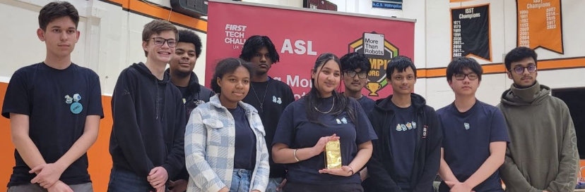

FTC Robotics CentreStage Competition 2024
One morning walking in a peer of mine asked me whether I was joining the robotics team as it had been offered to their physics class, considering the fact that it involved a programming aspect I happily accepted. For the past 5 months me and my team worked hard, working late nights making what we called "Kevin" with mixed feelings on March 2024 we arrived at the venue of the competition. Honestly, considering how poorly it went I am glad how despite all the dirt and mud we tread through we came out ontop winning a Design Award for our Robot. To describe challenges we faced, on the day of the competition we had prepared 2 claws which despite all odds happened to break whilst we were still tinkering with our robot. With no more claw he had to whip up a quick claw which could complete the series of challenges yet quite poorly, as software engineer of the team I am pleased to say that my contribution towards my team was successful, not only designing a comfortable control set for movement and arm and claw control but coding this 3 times for the other teams entered into this robotics competition. I am happy to show off this award as our hard work did not go unrecognised. I am thankful for my whole team and the Saturday pizza our coordinator had gotten us.